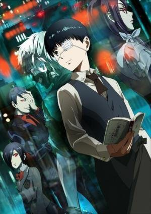

")
 
 IMDB-Wertung: 8.0 / 10
IMDB-Wertung: 8.0 / 10  Metascore:
Metascore: 
In Tokyo treiben Ghule ihr Unwesen. Wenn es dunkel wird, greifen sie unschuldige Bürger an und ernähren sich von ihrem Fleisch. Äußerlich sind sie von ihren Mitmenschen nicht zu unterscheiden. Und noch schlimmer: Sie leben mitten unter uns! Wer weiß, vielleicht hat das nette Mädchen aus dem Café oder der Nachbar von nebenan eine kleine Schwäche für Menschenfleisch?!So ist es kein Wunder, dass Bücherwurm und Erstsemester Ken mitten in den Armen einer Ghula landet. Die süße Rize ist zu toll um wahr zu sein: Ihr erstes Date mit Ken findet sogar in einem Buchladen statt! Doch beim Abschied offenbart sie ihre wahre Natur und greift Ken an. Ken überlebt die Ghul-Attacke durch einen unglaublichen Zufall – jedoch mit schweren Verletzungen. Damit er weiterleben kann, müssen ihm die Organe seiner Angreiferin transplantiert werden. Anfangs geht sein Leben recht normal weiter, doch nach und nach entdeckt er einige Ungereimtheiten an sich und entwickelt seltsame Gelüste …
Jahr: 2014
Dauer: 26 Minuten
FSK:
Land: Japan Studio: PierrotTonspuren: DD2.0 - ,
Untertitel: Deutsch,
Auflösung: 720p (1280x720) Größe: 274 MB
Genre: Action, Horror, Drama, Fantasy, Animation/Trick, TV-Serie
Regisseur: Shûhei Morita
Drehbuch: John Burgmeier, Aaron Dismuke, Josh Grelle, Sui Ishida, Chûji Mikasano
Soundtrack:
Darsteller:
 Sam Swanson als
Sam Swanson als  Mamoru Miyano als Tsukiyama Shuu
Mamoru Miyano als Tsukiyama Shuu Jamie Marchi als Hetare
Jamie Marchi als Hetare Takahiro Sakurai als Uta
Takahiro Sakurai als Uta Rie Kugimiya als Suzuya Juuzou
Rie Kugimiya als Suzuya JuuzouDatei: X:\HD-Anime-Serien\Tokyo Ghoul\Tokyo Ghoul S01\Tokyo Ghoul s01e01 Tragödie.mkv seit 25.11.2015
Festplatte: Gemischt-01+Anime
 Es gibt insgesamt 67 Filme in der Gruppe 'HD-Anime-Serien'
Es gibt insgesamt 67 Filme in der Gruppe 'HD-Anime-Serien'